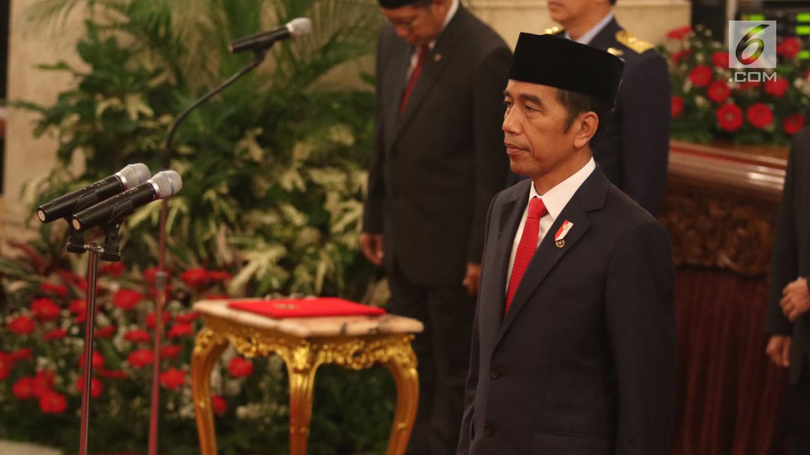
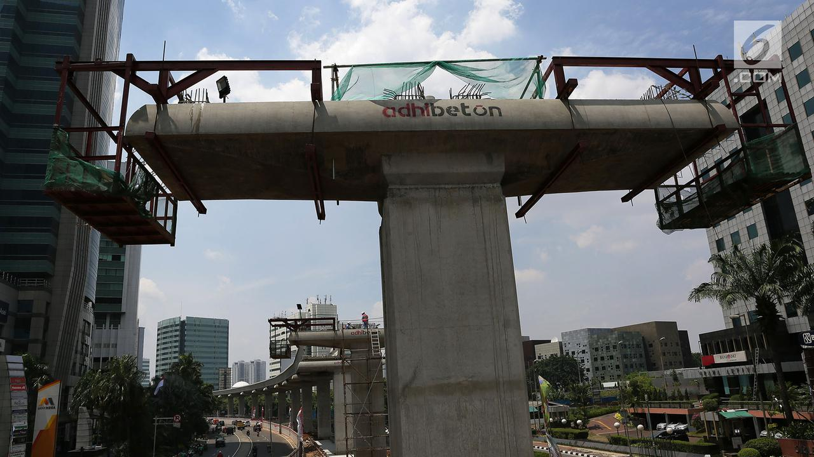

Diposting Oleh Septian Deni, Agustina Melani

Liputan6.com, Port Moresby - Presiden Joko Widodo (Jokowi) menyatakan, pariwisata menjadi industri yang paling menjanjikan bagi negara-negara di kawasan Asia-Pasifik.
Hal tersebut lantaran sebagai besar wilayah di kawasan ini merupakan wilayah laut sehingga cocok untuk menjadi destinasi wisata.
Hal tersebut diungkapkan Menteri Luar Negeri Retno Marsudi usai mendampingi Presiden Jokowi dalam Konferensi Tingkat Tinggi (KTT) Asia-Pasific Economic Cooperation (APEC) ke-26 di Port Moresby, Papua Nugini.
Retno mengungkapkan, dalam konferensi tersebut, Presiden Jokowi menyatakan jika industri pariwisata dunia tumbuh secara signifikan dalam beberapa tahun terakhir. Bahkan pertumbuhannya mampu melebihi pertumbuhan ekonomi dunia.
"Industri pariwisata dunia tumbuh 7 persen atau dua kali lipat dari laju ekonomi dunia yang berkisar 3,5 persen. Bahkan Bloomberg menghitung dalam 15-20 tahun ke depan 1 dari 4 lapangan kerja baru datangnya dari pariwisata. Oleh karena pentingnya Pariwisata di era digital. Karena dengan data-data tersebut menunjukkan pentingnya pariwisata untuk di kedepankan," ujar dia di Port Moresby, Papua Nugini, Minggu (18/11/2018).
Retno melanjutkan, Presiden Jokowi juga mengingatkan pentingnya sektor kemaritiman bagi negara-negara Asia-Pasifik. Sektor ini bisa menjadi penunjang industri pariwisata di banyak negara di kawasan tersebut.
"Oleh karena itu, selain ekonomi digital dan kamaritiman, ekonomi maritim juga penting dan APEC ini. 2/3 dari wilayah APEC adalah lautan. Maka Presiden mengusulkan isu pariwisata dan lifestyle sektor dapat masuk agenda APEC pasca Bogor. Karena itu merupakan tren baru," ungkap dia.
Terakhir, lanjut Retno, Presiden Jokowi juga menekankan pentingnya keadilan dan akses ekonomi bagi negara-negara di dalam kawasan Asia-Pasifik. Dengan demikian, kerja sama ekonomi bisa memberikan keuntungan bukan hanya bagi negara maju, tetapi negara berkembang di kawasan tersebut.
"Presiden juga menyampaikan tentunya dukungan Indonesia terhadap integrasi ekonomi regional yang fokus pada perdagangan bilateral penting sekali. Kemudian menuju kepada free trade area of Asia-Pasific, yang inklusif dan berkeadilan. APEC memiliki peranan yang khusus bagi inkubator gagasan-gagasan baru. Dan sekaligus sebagai pemandu jalan. Dan oleh karena itu Presiden Indonesia berkomitmen untuk mencapai Bogor Goal 2020. Dan mendukung penyusunan visi APEC pasca 2020," ujar dia.
========================================2 dari 2 Halaman======================================
Butuh Inovasi Pembiayaan Infrastruktur

Sebelumnya, Presiden Joko Widodo (Jokowi) mengatakan sangat penting inovasi pembiayaan infrastruktur bagi para anggota Asia-Pasific Economic Cooperation (APEC), khususnya negara berkembang.
Hal tersebut disampaikan Jokowi dalam Konferensi Tingkat Tinggi (KTT) APEC 2018 yang berlangsung di Port Moresby, Papua Nugini.
Menteri Luar Negeri Retno Marsudi menyatakan, dalam KTT APEC hari kedua, Presiden Jokowi menekankan pentingnya pembangunan infrastruktur. Hal ini menjadi kunci dari perkembangan sebuah negara.
"Pertemuan KTT APEC sudah selesai dan tadi Presiden sudah menyampaikan di dua sesi pada saat retreat yang kedua adalah pada saat working lunch pertemuan retreat. Beberapa isu yang disampaikan Presiden adalah mengenai infrastruktur kawasan. Kalau kita ingin bicara mengenai pembangunan maka infrastruktur menjadi salah satu kunci utama," ujar dia di Port Moresby, Papua Nugini, Minggu 18 November 2018.
Untuk membiayai proyek infrastruktur, lanjut Retno, Presiden Jokowi menyatakan tidak hanya bisa mengandalkan pembiayaan dari pemerintah.
Dengan inovasi, pembiayaan infrastruktur bisa didapatkan sumber lain tanpa membebani anggaran pemerintah.
"Kita tahu, pada saat kita bicara mengenai infrastruktur, maka semua biaya infrastruktu itu ditutup dari biaya pemerintah. Oleh karena itu perlu inovasi. Seperti yang disampaikan Presiden ini mulai dibahas pada saat kita di Bali untuk Annual Meeting IMF-World Bank. Adalah isu mengenai finance oleh karena itu perlu inovasi. Termasuk pembiayaan dari pasar modal," ujar dia.
Selain soal infrastruktur, kata Retno, Presiden Jokowi juga mengingatkan para pemimpin negara anggota APEC soal perkembangan digital. Hal ini mengakibatkan terjadinya perubahan yang pola kegiatan ekonomi.
"Presiden mengatakan ini sudah masuk pada era digital. Masalah e-commerce, sosial media, itu sudah ada di mana-mana. Dan sekarang barang itu tidak diperoleh berdasarkan on demand karena masalah e-commerce dan sosial media. Oleh karena itu, Presiden mengatakan terjadi pergeseran besar (masyarkat) dari konsumsi barang menjadi konsumsi pengalaman," kata dia.